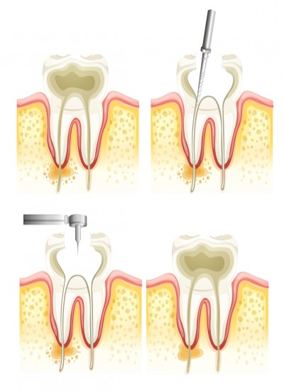

English
English
ROOT CANAL TREATMENTS IN TURKEY
Atlantic Dental Clinic Istanbul
What is root canal treatment? What does endodontics mean? Root canal treatment cost in Turkey?
What is Root Canal Treatment?
It is the treatment of replacing the soft vein-nerve extension, which is the living part of the tooth, which is applied to prevent and heal the inflammation of the extensions that we call the dental nerve, which is the layer above the gingival border in our mouth, and the dental nerve under the dentin. This treatment is performed by endodontists. In the past, inflammation in the dental nerves (pulp) was resolved only with tooth extraction treatment, but today, with the root canal treatment method performed by dentists, the lifespan is increased without tooth extraction. At the same time, in the dental canal treatment, which gives an aesthetic appearance, caries and canals are cleaned, and canal filling is performed to prevent leakage.
What is Endodontics?
The structure of our teeth consists of two parts: the visible region and the invisible region in the bone in the mold. The visible area is called the crown, while the invisible area is called the root. In addition, the outermost layer of our teeth is the enamel layer, under which there is a region called dentin. In the lower part of the outer layers of our teeth, called enamel and dentin, there is pulp known as the dental nerve in the form of soft connective tissue. The pulp is the structure that nourishes and develops the tooth. When the tooth has developed adequately, the nerve of the tooth feels the pain like a stimulant, and reports that the tooth is damaged or infected. At this point, endodontics is a branch of dentistry that performs treatment for the recovery of the diseased tooth by examining and evaluating the diseases that have descended to the dental nerve. This treatment is performed by specialist dentists called Endodontists.
How is root canal treatment performed in Istanbul?
As we mentioned at the beginning, root canal treatment is performed by a specialist dentist, an endodontist. The time of the treatment is determined by the damage to the tooth.
- During the dental root canal treatment, the area to be treated is locally anesthetized. In this way, the patient does not feel pain and suffering during the procedure. In case of tooth decay, the decay is cleaned and the tooth is opened from the crown layer.
- Radiographs (x-rays) are taken to see the length of the canal and to detect if there is a widespread infection.
- Tooth root is cleaned. If there are caries and tooth fracture in the bone, it is cleaned as well.
- For root canal treatment, canal enlargement is performed with the canal filing method, using various hand tools and rotary instruments. Both root canals are formed in accordance with the treatment.
- Unnecessary pulp, damaged dental nerve, and infection residues in the treated area are cleaned. The inside of the tooth can be cleaned by using water or hypochlorite at regular intervals. This cleaning is very important for dental root canal treatment.
- If there is a dead tooth and inflammation that has occurred at the tip of the tooth root, medication can be applied to the root canals to heal the bacteria. In order for the drug to be effective, it must be kept in the canal for 5-7 days. A temporary filling material can be placed on the treated tooth during this time period, which should be expected.
- If there is an extreme case of inflammation in the root of the tooth, the dentist may recommend an oral medication.
- Finally, the temporary filling that was made before it is removed. With permanent filling, both the pulp cavity and the canal are filled, sealed, and restored. A crown can be placed on the tooth to provide an aesthetic appearance.
In Which Situations Is Root Canal Treatment Performed?

Although there are many reasons that require root canal treatment, since root canal treatment is the last treatment to be preferred in caries treatment, it should be decided by the endodontist whether this treatment is needed or not. What kinds of patients are treated with root canal treatment? At what stage should root canal treatment be done? The general answers to the questions are available in the following order:
- If spontaneous pain starts in the tooth, for no reason.
- If there are caries affecting the nerve area of the tooth.
- If the pulp (dental nerve, dental pulp) is dead or damaged after trauma, or caries caused by external factors such as impact.
- The tooth has lost its vitality due to trauma.
- If sensitivity to cold has occurred due to caries that have started to damage the tooth nerve, and pain and aches have started afterwards.
- If the decay continues, pain and sensitivity continue due to the failure of the filling treatment.
Things to Do Before Root Canal Treatment
There are many points to be considered by the patients before and during the root canal treatment procedures to be performed by the endodontist. These are generally:
- Do not eat hard-shelled foods.
- Not consuming foods such as dried fruit, caramel, Turkish delight, which have the risk of sticking to our teeth.
- Not chewing gum,
- Avoiding extremely cold and hot drinks while consuming liquids. However, paying attention to the issues recommended by your doctor, except for those listed, will keep us away from the risk of unsuccessful root canal treatment.
What to Do After Root Canal Treatment
What should be considered after root canal treatment is a curious issue in the minds of patients. It is much more important for patients after root canal treatment. After root canal treatment, complaints such as pain, swelling, pain when pressure is applied on the tooth, tooth discoloration, tooth breakage, temporary filling, and tooth decay can be seen. Following are the points recommended by dentists after dental root canal treatment and being considered by patients:
- Temporary, non-severe pain and tooth hypersensitivity may occur after root canal treatment. Not using the treated area for a few days will alleviate these discomforts. The severity of the pain may increase in the formation of a tooth infection or tooth abscess. In addition, in such cases, painkillers recommended by your dentist can also be used.
- Gargling with salt water 2 or 3 times a day can reduce the severity of the pain.
- Cold or hot food drinks should not be consumed for 2 hours after root canal treatment.
- Teeth should be cleaned with a brush twice in the morning after breakfast and in the evening before going to sleep. In addition, after the root canal treatment, the teeth should be cleaned with dental floss (once every two days) and mouthwash should be made with gargle.
- Products such as dried fruit, bubble gum, Turkish delight and caramel, which have the risk of sticking to the filling in an average of 2-3 days, should be avoided until the filling is made to the tooth area after the root canal treatment settles in the area. Consumption of hard-shelled foods that will damage the filling, and teeth should also be avoided.
- The way we eat after root canal treatment should be given importance, and both the right and left sides of our chin should be used.
- Since smoking and alcohol use cause abscess in the tooth, it should not be used for at least one day. Smoking and alcohol use also delay recovery.
- Going to the dentist for 6-month regular checkups after root canal treatment will be good for healing and long-term use.
- If filling loss is encountered after root canal treatment, a dentist should be consulted without delay.
How Long Does Root Canal Treatment Take?
The number of sessions varies according to the condition of the tooth to be treated. Root canal treatment can be completed in 30 minutes, or it can take several months. The fact that the tooth is single or multi-rooted also affects the number of sessions. If a single rooted tooth is not complicated, it can be finished in one session, while the treatment of a tooth with more than one root may take 2-3 sessions. In the case of a difficult infection in the tooth area, the duration of root canal treatment is prolonged, as drug therapy and dressing will be applied for the treatment of this infection.
FREQUENTLY ASKED QUESTIONS ABOUT ROOT CANAL TREATMENTS
It is not possible to say anything clear about the dental canal treatment price schedule. Prices declared in some virtual environments can also mislead patients with certainty. Since root canal treatment will vary according to the patient's condition, it is a personal treatment method, and therefore root canal treatment prices are also different. However, a net price can be given after a preliminary examination by the dentist. In the tariff published by the Turkish Dentists Association, which is taken as a basis when determining the root canal treatment prices, there are non-binding base prices, such as root canal treatment price 2021 - root canal treatment price 2022. The quality of the service provided and the materials used is also an important detail in determining the price. While determining the dental canal treatment prices, whether the caries are heavy or not, therefore the number of sessions has increased, there will be differences in the number of canals and tooth roots, which tooth will be treated (incisors, premolars and molars), and the experience of the endodontist who will do the treatment are important factors.
After a successful treatment by an endodontist and oral care, in accordance with the recommendations, the tooth that has had root canal treatment will be able to use it for life. In root canal treatment, the tooth is weakened because the pulp, also known as the dental nerve or dental pulp, is removed. Fracture and cracking can be seen in the weak tooth. To prevent this, care should be taken while using the treated tooth. The tooth should not be forced when eating hard-shelled foods.
During root canal treatment, the area to be treated is locally anesthetized. Therefore, pain and suffering are not felt. If there is a numbness problem in extremely painful or heavily infected teeth, in such cases, treatment is performed by the dentist using other numbing methods.